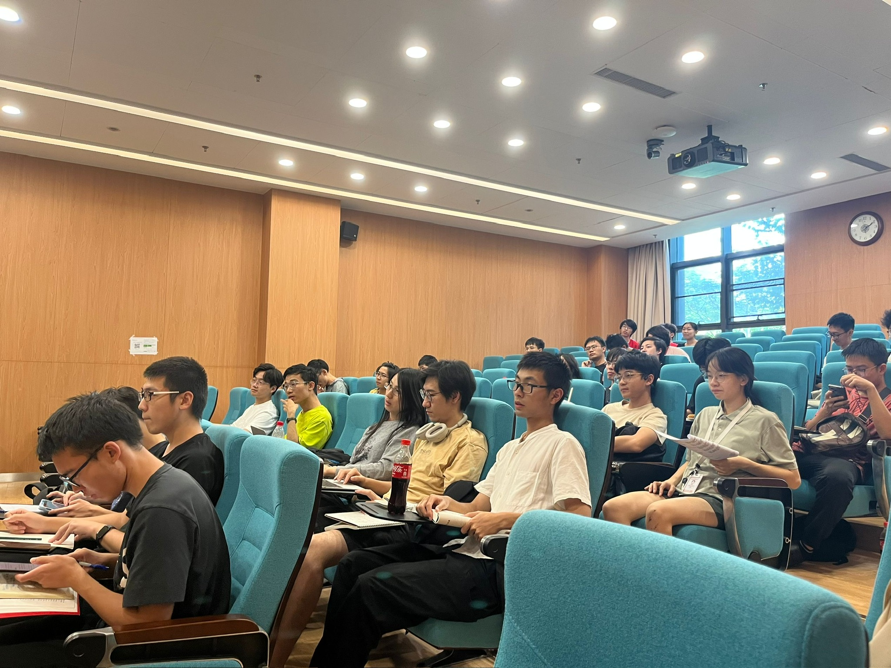
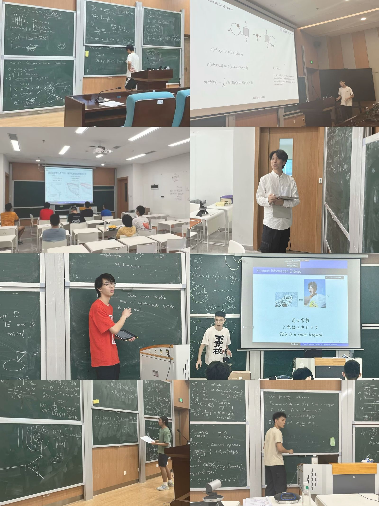
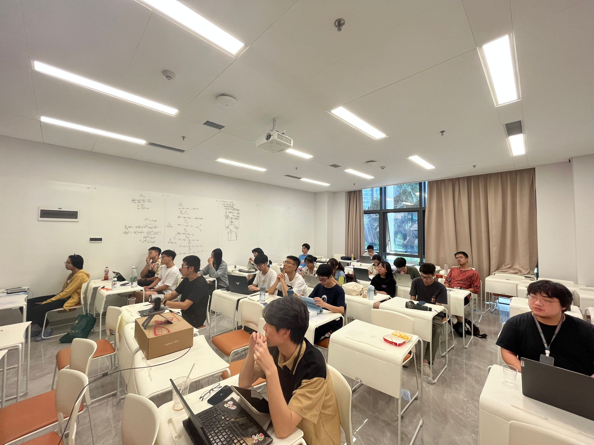

SUSTech · Undergraduate-led mathematics
Mathematics and Physics
Society Workshop
I co-organized the first Mathematics and Physics Society Workshop at the Southern University of Science and Technology. Initiated by undergraduates, the workshop brought together more than 600 participants overall and attracted attention on social media.
Like the undergraduate mathematics salon, the workshop reflected my interest in creating spaces where students can share mathematics and learn through discussion.


My talk
From the Riemann Sphere to Riemann Surface Theory
During the workshop, I gave this talk to an audience of around 50 joining in person and online.
From the workshop




These experiences strengthened my belief that communicating mathematical ideas clearly is an essential part of learning and doing mathematics.